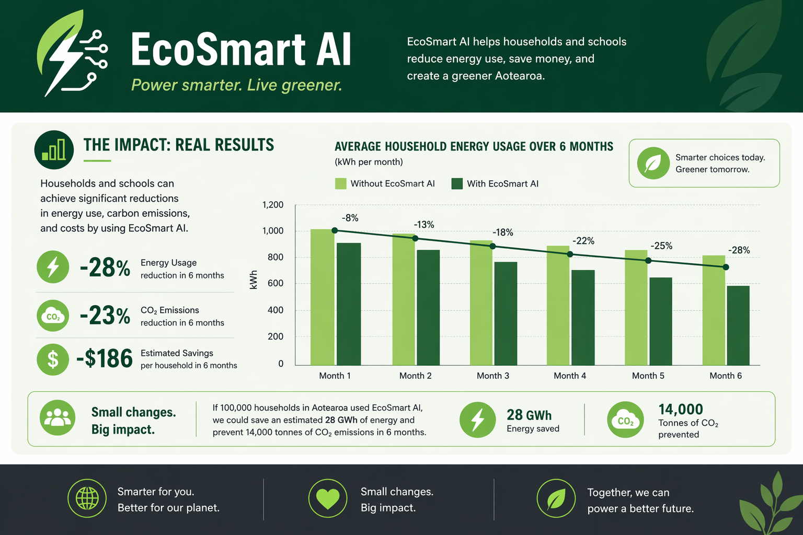

Kia Ora, I'm Samantha
Sison From New Zealand
Future Finance & Technology Student
Deputy Head Girl 2026 • Skyline Enterprises • LIYSF '26
Explore My Journey →Who is Samantha?
Kia ora, I'm Samantha (Sammy) Sison — Year 13 Deputy Head Girl at Wakatipu High School. Born in the Philippines and raised in Queenstown, I'm passionate about technology, business, and finding ways to give back to my community.
My interest in tech started back in Year 9 and has grown into a drive to build real, practical solutions. From representing New Zealand at the London International Youth Science Forum to working with local leaders on the JBWere Impact100 grant panel, I love learning, taking on new challenges, and helping create opportunities for young people in regional areas.
Key Highlights
- Leadership: WHS Deputy Head Girl (2026)
- Community: JBWere Impact100 Youth Recipient
- STEM: LIYSF Imperial College London Delegate
- Experience: Skyline ICT Summer Tech Intern
- Academics: Level 1 & 2 Excellence Endorsements
My Journey
Deputy Head Girl & Impact100 Recipient
Supporting student initiatives at WHS while participating alongside local female leaders to evaluate charity proposals and allocate $188,000 in community grants.
LIYSF Imperial College London
Represented NZ and the Philippines among 500 global students, connecting with international researchers and sharing tech perspectives.
Skyline ICT Summer Internship
Worked in a small team to build an AI-driven sentiment analysis web tool from scratch, presenting our final solution to senior leadership and the Board.
GirlBossNZ & GirlsWhoGrowNZ
Researched AI applications in healthcare, designed an energy-tracking app concept, and co-led an agricultural water filtration research project.
What I'm Building
Skyline Sentiment Analysis Web Application
Built with Python, APIs, and automated response generation during my ICT internship to process customer feedback in real time.

EcoSmart Energy Tracker
Developed through GirlBossNZ a business model for an app aimed to help households and businesses understand their energy consumption.
Whakatipu Youth Trust Web Systems
Front/Backend Systems Volunteer: update sign-up forms, and organize excell sheets to keep the WYT website up to date.
Contact
"Young women do not need permission to belong. We do not need to wait until we are older, louder, or more certain. Confidence is something we build by choosing to show up before we feel completely ready."
— Samantha Sison